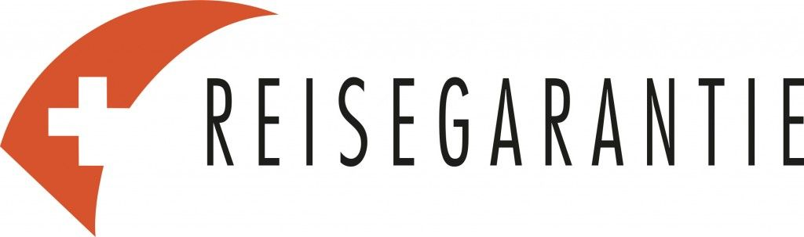

Über Uns

Franz Stadelmann, Madagaskarhaus Basel
Gründer des Madagaskarhauses ist Franz Stadelmann.
Er pendelt seit Jahrzehnten zwischen Afrika, Madagaskar sowie der Schweiz hin und her. Er ist Ethnologe sowie Entwicklungshelfer mit 40 Jahren Erfahrung in Afrika.
In Madagaskar gründete er 1994 die Organisation PRIORI und erstellte zudem 2008 das Piratenmuseum in Antananarivo.
2010 gründete er das Madagaskarhaus in Basel und leitet es seither.
In der von ihm in Madagaskar gegründeten Organisation PRIORI arbeiteten seit Beginn nur Frauen, denn – so ist Franz Stadelmann überzeugt – Afrikas (positive) Zukunft liegt auf den Schultern der Frauen.
Nutzen Sie sein Know-how, denn vor weit über 30 Jahren (Januar 1988) ging er für die Schweizer Entwicklungshilfe (DEZA) nach Madagaskar, baute Projekte auf (Gesundheitswesen, Trinkwasser, Katastrophenhilfe etc). Er war Vizekoordinator aller DEZA-Projekte in Madagaskar, was damals ein Schwerpunktland der Schweizer Entwicklungshilfe war.
2010 publizierte die Schweizer Zeitschrift ‘active life’ eine dreiteilige Interviewserie mit PRIORI-Gründer Franz Stadelmann über das humanitäre sowie private Leben des PRIORI-Gründers Franz Stadelmann. 2015 veröffentlichte Bluewin ein Interview mit Franz Stadelmann, das seine Vergangenheit als Lastwagenfahrer auf der Orientroute beleuchtete.
Persönliche Bemerkung von Franz Stadelmann:
Den schönsten Kommentar, den ich im Madagaskarhaus erhielt, ist:
‘Der Besuch im Madagaskarhaus und Deine Sorgfalt sind prägend. Mit Achtsamkeit bereiten wir uns auf unsere Reise vor. Vielen Dank!’
Sie können mich jederzeit erreichen per Telefon
Telefon von ausserhalb der Schweiz: +41 61 332 19 27
Telefon aus der Schweiz: 061 332 19 27
In einem kurzen Film erklärt Franz Stadelmann, welche Verbindung zwischen PRIORI in Antananarivo sowie dem Madagaskarhaus in Basel besteht.
Mehr zum Team des Madagaskarhauses in Basel
Schweizer Reisegarantie

PRIORI Reisen GmbH ist langjähriges Mitglied im Schweizer Verband der „Reisegarantie“, die im Falle einer Insolvenz unsererseits eine Garantie für die gezahlten Kundengelder übernimmt.Für weitere Informationen lesen Sie gerne die Konsumenteninformation der Reisegarantie.
Über Sicherungsscheine etc. zum Insolvenzschutz, wie sie z.B. in Deutschland oft üblich sind, verfügen wir nicht.
Nachhaltigkeit
In unseren Büros möchten wir Nachhaltigkeit leben: Wir möchten sozial, ökologisch und ökonomisch tragbar agieren.
Unsere Reisephilosophie ist bedacht auf intensive und langsame Reisen mit viel Zeit für eigene Erlebnisse. Wir möchten unsere Reisegäste von Anfang an umfassend beraten und betreuen. Ein langfristig ausgerichteter und fairer Umgang auf Augenhöhe mit den Einheimischen, Partnern und Mitarbeitern vor Ort in Madagaskar ist uns sehr wichtig.
Einige Gedanken dazu:
Klimaschutz
Klimabewusst zu reisen bedeutet nicht zu fliegen, denn letztlich ist das Flugzeug wesentlich klimaschädlicher als andere Verkehrsmittel. Ein einziger Fernflug übersteigt bereits wesentlich das „klimaverträgliche“ Emissionsbudget, das einem Menschen für ein ganzes Jahr zustehen würde. Dieser Aussage stimmen wir ohne Einschränkungen zu. Gleichzeitig verkaufen wir aber Flüge, denn ohne sie kommt man nicht – oder nur äusserst schwer – nach Madagaskar.
Was wir tun: Wir verzichten seit 2009 auf den Gewinn durch den Flugticketverkauf nach Madagaskar und pflanzen für jeden durch uns gebuchten Flug fünf Bäume (lokale, nachhaltige Baumarten) in einem langfristig ausgerichteten Aufforstungsprogramm auf Gemeindeland Madagaskar.
2023 hat der technische Berater der Aufpflanzungen, Lukas UHL, die Aufforstung in Andoharena / Fianarantsoa erneut besucht und berichtet darüber in seinem Video. Der damals nackte Hügelhang wurde 2016 mit PRIORI-Finanzierung von der lokalen Organisation Voiala unter Begleitung von Lukas UHL aufgeforstet. Die Anlage sieht jetzt so aus :
Ökologischer Fussabdruck
Wir beziehen für unser Büro in Basel 100% erneuerbaren Strom aus Eigenproduktion der IWB (Unternehmen im Besitz des Kantons Basel-Stadt).
Wir nutzen Recyclingpapier und recyceln ebenfalls.
Wir haben kein Firmenauto und nutzen ausschliesslich den öffentlichem Nahverkehr. Wir achten auf kurze Arbeitswege: alle MitarbeiterInnen im Madagaskarhaus gehen zu Fuss, per Velo oder mit den öffentlichen Verkehrsmitteln zur Arbeit. Externe MitarbeiterInnen arbeiten von zu Hause aus.
FAIR ANKOMMEN – Unser Qualitätssiegel
Unserer Philosophie entsprechend steht PRIORI Reisen seit 1994 für Individualität, Zuverlässigkeit und Qualität!
Mit der Gründung der Reiseorganisation PRIORI 1994 in Antananarivo durch den Ethnologen und Entwicklungshelfer Franz Stadelmann wurde der erste Grundstein für die Organisation von individuellen und nachhaltigen Madagaskarreisen im Land selbst aufgebaut.
Mit der zusätzlichen Unterstützung des 2010 eröffneten Madagaskarhauses in Basel arbeitet das Unternehmen heute nach dem Prinzip «Swiss Quality made in Madagaskar». Dabei bilden das Know-how der madagassischen Mitarbeiterinnen vor Ort in Antananarivo, kombiniert mit dem fundierten Fachwissen des Teams in Basel, die ideale Kombination jedem Reiseinteressenten ein authentisches Reiseerlebnis in Madagaskar zu ermöglichen.
So dient das Madagaskarhaus in erster Linie als Reise-, Kultur- und Informationszentrum und bietet allen Reiseinteressenten eine ausführliche und ehrliche Beratung für Reisen nach Madagaskar. Die Kollegen in Antananarivo hingegen bearbeiten die Reiseanfragen und massgeschneiderten Routenverläufe vor Ort und sind die Ansprechpartner während der gesamten Reise.
PRIORI arbeitet marktwirtschaftlich UND mit grossem sozialem Engagement
Im Fokus aller Reisen steht der direkte Kontakt zu den Reisepartnern vor Ort. PRIORI organisiert alle Touren selber und bedient sich nicht den Angeboten von grossen Reisevermittlern oder Zwischenhändlern. Dabei wird sichergestellt, dass vor Ort sowohl eine faire Behandlung als auch korrekte Bezahlung aller Beteiligten gewährleistet ist. Die Wertschöpfung verbleibt im Reiseland, Arbeitsplätze werden geschaffen und der kulturelle Austausch findet für jeden Reisenden während des Urlaubs statt. So richten die von PRIORI organisierten Reisen in keinem Fall einen Schaden im bereisten Land an, sondern dienen dazu, die im Reiseland lebenden Menschen mit den Besuchern des Landes zu verbinden. So ermöglicht PRIORI das voneinander Lernen und das Erhalten eines authentischen Einblicks in die sich treffenden individuellen Lebensformen und das Teilen von Erfahrungen. So werden ausschliesslich Reisen für kleine Gruppe oder individuell reisende Einzelpersonen, Paare oder Familien organisiert, die vor Ort von regionalen Fahrern und Guides betreut werden.
Neben der Vermittlung und Veranstaltung von Reisen werden zudem lokale Initiativen und Projekte unterstützt und auch hier wird stets der faire und korrekte Umgang mit den jeweiligen Partnern gepflegt. Teilweise ist PRIORI der einzige touristische Kontakt für Besuche und Besichtigungen von befreundeten einheimischen Einrichtungen, Werkstätten oder einzelnen Künstler vor Ort.
Das PRIORI-Programm «sanft landen»
Fernreiseziele wie Madagaskar können für Reisende mit 2-3 Wochen Urlaubszeit natürlich nicht ohne Flugzeug bereist werden. Dieses birgt immer einen hohen CO2-Ausstoss. Um diesem entgegenzuwirken, hat PRIORI Reisen sein eigenes Programm «sanft landen» ins Leben gerufen. Hierbei sind bei jeder Flugbuchung die folgenden Leistungen inklusive, um den jeweiligen ökologischen Fussabdruck des Reisenden zu vermindern und einen Beitrag zum CO2-Ausstoss jedes über PRIORI gebuchten Fluges zu leisten:
- 5 Bäume pro Flug: im Namen des Reisenden werden von einer Dorfgemeinschaft auf Gemeinschaftsland 5 Bäume pro Person in Madagaskar gepflanzt und katalogisiert, die während der Reise auch besucht werden können.
- Am Ankunftstag werden die Gäste am Flughafen von einem lokalen Fahrer abgeholt.
- Vom Flughafen gibt es den begleiteten Transfer in die Stadt.
- Die erste Übernachtung im neuen Reiseland findet in einem Mittelklassehotel im Zentrum, inkl. Frühstück statt, um erstmal in Ruhe anzukommen.
- Nach der Ankunft erhalten die Reisende Auskünfte zu verschiedenen Reisemöglichkeiten und möglichen Besuchszielen, Unterstützung beim Wechseln von Geld sowie die Aufklärung über die aktuelle Situation und Sicherheit im Land.
So arbeitet PRIORI seit mehr als 20 Jahren daran, die eigene Vision des «FAIR ANKOMMENs» bei jeder Reise umzusetzen und handelt stets nach der Philosophie:
«Am Ende einer gelungenen Reise sollen Bereiste und Reisende mit
einer guten Erinnerung und einem Mehrwert auseinandergehen.»
Deshalb sehen die Reisen von PRIORI so aus, wie sie aussehen und werden ausschliesslich mit Partnern geplant, die dieser Reisephilosophie folgen und unserem Versprechen für Nachhaltigkeit nachkommen!
Willkommen im Madagaskarhaus in Basel
Wir sind hier und dort: in Basel und in Madagaskar.